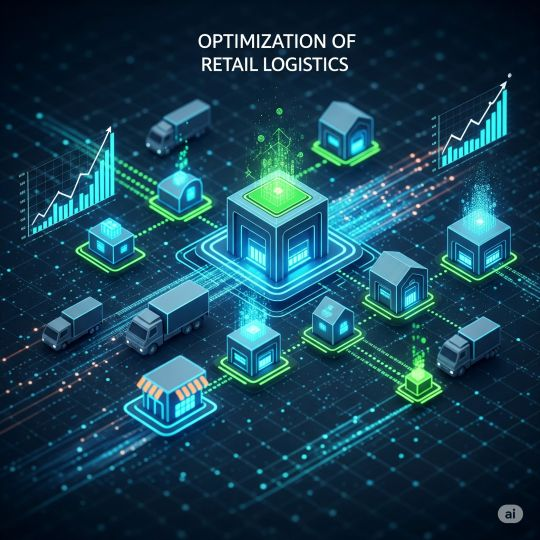
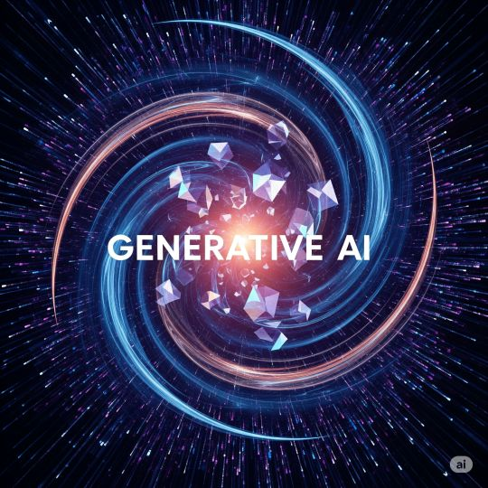

03 Insights
Insights Gapatic: Explorando el Futuro de la IA y la Innovación
Compartimos nuestro conocimiento, análisis y perspectivas sobre las últimas tendencias y aplicaciones de la Inteligencia Artificial para impulsar tu negocio.
Conciliación con agentes: la diferencia no puede ser probable
En octubre de 2026 Simetrik, nacida en Colombia, volvió a poner en el centro un agente de IA para conciliar pagos y detectar fugas de ingreso. La lección para cualquier empresa con muchos medios de pago: la IA puede investigar excepciones; el cruce que cierra el asiento tiene que ser exacto, repetible y auditable.
LeerAgente contable por WhatsApp: el reporte que nadie firmó
En octubre de 2026 las plataformas contables de LatAm ya entregan reportes financieros por chat y WhatsApp con un agente de IA. El ahorro de tiempo es real; el riesgo es que una cifra llegue a un banco, a un socio o a la autoridad tributaria sin rastro de quién la pidió ni quién la validó.
Leer
AI Scan en pull requests: si no mides remediación, solo acumulaste alertas
El 13 de octubre de 2026 GitHub publicó métricas de AI Scan en el security overview: hallazgos, remediación y adopción de autofix. Encender el escaneo con IA en los PR no basta; sin esos números, el equipo de seguridad no sabe si la inversión reduce riesgo o solo suma ruido.
LeerAlucinaciones con consecuencias: quién revisa lo que la IA entrega
La IA generativa ya redacta informes, resume contratos y responde a clientes. El problema no es que se equivoque, sino que un dato inventado llegue sin revisión a un presupuesto, a una propuesta o a una conversación comercial. La encuesta AI & Boards 2026 de EY Perú muestra que pocas empresas tienen hoy reglas para evitarlo.
LeerApps creadas con un prompt: el fin de la planilla también necesita gobierno
Plataformas como Ricoh AI App Builder, lanzada en América Latina en octubre de 2026, convierten una necesidad escrita en lenguaje natural en una aplicación conectada al ERP o al CRM. Es la mejor oportunidad en años para jubilar planillas y cadenas de correos, y también la forma más rápida de llenar la empresa de apps que nadie revisó.
LeerAgentes de cobranza: la IA que negocia la promesa de pago
En 2026 los agentes de IA ya no solo responden preguntas de deudores: consultan el ERP, ofrecen un plan y registran la promesa de pago. Bien diseñados mejoran la recuperación sin quemar la relación con el cliente; mal gobernados, prometen lo que tu política no permite y cobran de formas que la ley prohíbe.
Leer
Nube soberana para IA: dónde viven tus datos cuando el modelo responde
En 2026 la IA empresarial empieza a ofrecerse desde centros de datos dentro de la región, con promesa de soberanía y cumplimiento local. Antes de mover cargas, hay que saber qué datos tocan tus modelos, dónde se procesan de verdad y qué pasa con prompts, logs y respaldos.
Leer
Comercio agéntico: tu próximo cliente compra desde el chat
En 2026 los agentes de IA ya compran y pagan en Latinoamérica, con el usuario confirmando desde la conversación. Si tu catálogo, tus precios y tus promociones no son legibles para un agente, no pierdes una venta con queja: el agente recomienda a otro comercio.
LeerReglamento de IA en Perú: el primer plazo ya venció para finanzas y salud
Desde el 10 de septiembre de 2026, las empresas que usan IA en salud, educación, justicia, seguridad, economía y finanzas ya deben cumplir el Reglamento de la Ley 31814. Para el resto el reloj sigue corriendo: el trabajo es saber hoy qué sistemas son de riesgo alto y poder demostrarlo.
Leer
Voz clonada del CFO: el pago urgente que nadie verificó
En 2026 basta un audio público para clonar la voz de un directivo y pedir una transferencia urgente por WhatsApp o videollamada. La defensa no es adivinar si la voz es falsa: es que una voz, sola, nunca alcance para mover dinero.
LeerCuentas personales de IA: el DLP que no ve el prompt
En 2026 el riesgo no es solo el agente en producción: es el colaborador que pega datos sensibles en un chat con cuenta personal. El DLP del endpoint no ve ese prompt porque sale por HTTPS hacia un tenant que la empresa no controla.
LeerInventario de agentes: lo que TI no sabe que corre en producción
En 2026 muchas empresas en LatAm ya tienen agentes o “asistentes con tools” en producción sin un registro único: quién los desplegó, qué sistemas tocan, con qué identidad y con qué kill switch. Sin inventario no hay gobernanza, ni auditoría, ni respuesta a incidentes. TI descubre el agente cuando algo falla o un proveedor pregunta por el contrato.
LeerDrift silencioso: el modelo que responde y ya no acierta
En 2026 muchas empresas en LatAm tienen un modelo o un RAG en producción que “sigue respondiendo”. Sin monitoreo de data drift y concept drift, la API no falla: solo empeora. El negocio nota el daño semanas después, cuando el piloto ya se vendió como éxito.
Leer
SSRF por tools: el agente que abre tu red interna
En 2026 mucha empresa en LatAm le da al agente una tool HTTP “para consultar APIs”. Si esa tool acepta cualquier URL sin allowlist ni bloqueo de rangos privados, una inyección o un documento malicioso convierte al agente en un proxy hacia tu red interna: metadata cloud, admin panels y servicios que nunca debieron verse desde internet.
Leer